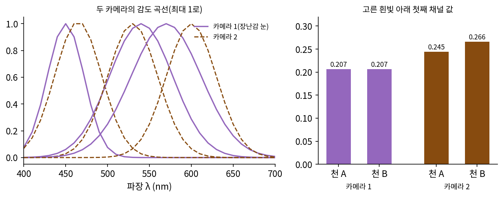
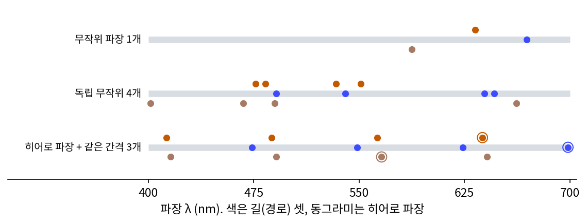
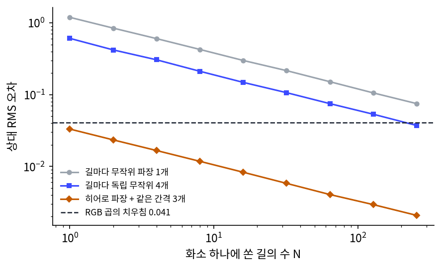
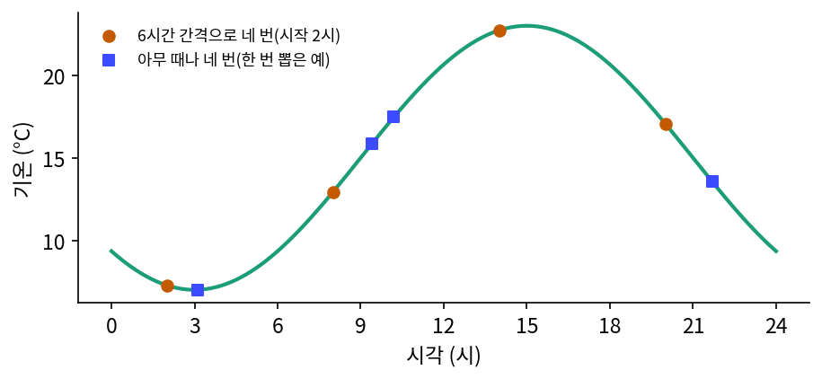
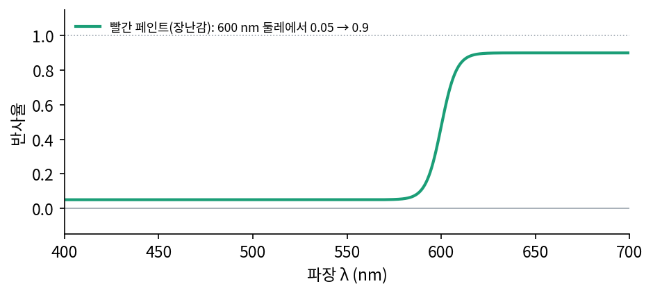
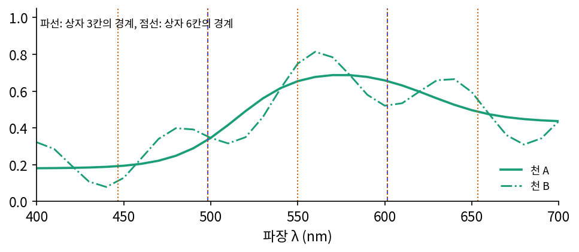

스펙트럴 렌더링: 파장 몇 개를 골라 경로마다 따라가기
화면을 다 그린 뒤에는 메타머로 합쳐진 두 색을 다시 가를 수 없었으므로, 세 숫자로 줄이기 전에 파장마다 「조명 × 반사율」을 계산하는 수밖에 없다. 그런데 렌더러는 화소마다 빛이 지나가는 경로를 수십, 수백 개씩 쏘아 더한다. 경로마다 파장 31칸을 모두 계산하면 일이 열 배 넘게 늘고, 실제 빛은 31칸이 아니라 끝없이 많은 파장으로 되어 있다. 파장을 몇 개만 골라도 된다면, 어떻게 골라야 할까?
역사: 3×3 행렬로는 모자랐다
시각 효과 회사 웨타 디지털은 파장마다 빛을 계산하는 자체 렌더러 마누카(Manuka)를 만들었다. 2014년 그래픽 전문지 fxguide 기사에 따르면, 이 렌더러로 그린 첫 장면은 『호빗: 스마우그의 폐허』에 들어갔고, 『호빗: 다섯 군대 전투』를 첫 주력 작품으로 준비하고 있었다. 개발을 이끈 파시오네(Luca Fascione)는 처음 동기를 파이프라인의 다른 곳에서 쓰던 모델을 검증해 보려는 연습이었다고 말했다. 기사는 피부 속에서 파장마다 빛이 다르게 퍼지므로 파장을 따라가면 피부가 더 정확해진다는 기대를 함께 적었다. 마누카의 구조는 2018년 ACM TOG(그래픽 학술지)에 논문으로 실렸다.
웨타는 그 뒤 촬영장의 조명에서 카메라, 렌더까지 빛을 실제 단위로 맞추는 PhysLight 를 만들었고, 그러려고 카메라마다 센서의 파장별 감도를 쟀다. fxguide 의 PhysLight 기사에서 파시오네는 카메라 색을 바꾸는 3×3 행렬로는 모자라며, 그 너머로 가면 사람이 알아볼 만한 큰 차이가 생긴다고 말했다. 그 차이는 예상한 피부보다 훨씬 넓게, 아주 많은 장면에서 보였다고 했고, 이 방식을 처음 전면에 쓴 작품은 『혹성탈출: 종의 전쟁』(2017)이다.

왜 3×3 행렬로 모자란지는 장난감 카메라 둘로도 보인다. 고른 흰빛 아래 카메라 1(장난감 눈)에서 천 A·B 의 첫째 숫자는 둘 다 0.2065 인데, 봉우리를 465 nm 로 옮긴 카메라 2 에서는 0.2446 과 0.2664 다. 매끈한 재질 200개로 맞춘 3×3 행렬은 카메라 2 의 숫자를 카메라 1 의 숫자로 평균 3.2%의 상대 오차로 옮기지만, 가장 나쁜 재질은 18.6% 틀린다. 카메라마다 메타머가 다르기 때문이다.

카메라 두 대의 색을 맞추는 거면 같은 색표를 두 카메라로 찍어서 행렬을 맞추면 되잖아요. 실제로도 그렇게 하지 않나요?

색표에 있는 색들끼리는 잘 맞아요. 장난감에서도 평균 3.2%였죠. 그런데 영화는 실제로 찍은 배우 얼굴 옆에 CG 로 그린 유인원 얼굴을 붙여요. 배우 얼굴과 유인원 얼굴의 스펙트럼이 다른데 한 카메라에서 같은 색이면, 다른 카메라나 다른 조명에서는 어떻게 되죠?

갈라지겠네요. 그걸 행렬로 다시 붙이려면 같은 입력에 다른 출력을 내야 하는데, 행렬은 그걸 못 하고요.
그러니까 카메라 센서 감도 자체를 재서, 렌더러가 그 감도로 직접 세 숫자를 만들게 한 거군요. 줄이는 일을 카메라와 똑같이 하면 메타머도 카메라와 똑같이 생기니까요.

그 대가로 렌더러는 이제 파장을 따라가야 해요. 그 계산을 어떻게 감당했는지가 다음 이야기예요.
화소 하나에 경로 몇 개: 히어로 파장
같은 웨타의 연구자들은 2014년 카렐 대학교, 카를스루에 공대 연구자들과 함께 「히어로 파장 스펙트럼 샘플링」을 발표했다. 경로마다 히어로 파장(hero wavelength) 하나를 무작위로 고르고, 나머지 몇 개는 그로부터 같은 간격으로 놓아 가시광 전체를 고르게 덮는 방법이며, 빛이 어느 방향으로 튈지는 히어로 파장으로만 정한다. 공개 렌더러들도 파장을 따라간다. 연구용 렌더러 Mitsuba 3 은 360~830 nm 를 다루고, 교과서 『물리 기반 렌더링』의 pbrt-v4 는 경로마다 파장 4개를 기본으로 쓴다.
장난감 눈으로 화소 하나를 그려 보자. 백열등 아래 천 A 의 참 값 (0.0748, 0.5186, 0.6756)을, 경로마다 파장 몇 개를 무작위로 골라 「감도 × 조명 × 반사율」을 재고 평균 내어 추정한다(몬테카를로). 오차는 추정한 세 숫자와 참 값의 차이를 제곱해 평균 낸 뒤 제곱근을 취하고 참 값의 크기로 나눈 상대 RMS 오차로 잰다. 세 방법을 견준다. 경로마다 무작위 파장 1개, 독립 무작위 파장 4개, 히어로 파장 1개와 75 nm 간격으로 3개를 더한 4개다.


| 경로 수 N | 무작위 1개 | 독립 무작위 4개 | 히어로 + 같은 간격 3개 | RGB 곱 |
|---|---|---|---|---|
| 1 | 1.1932 | 0.6078 | 0.0331 | 0.0407 |
| 16 | 0.2992 | 0.1481 | 0.0083 | 0.0407 |
| 256 | 0.0750 | 0.0372 | 0.0021 | 0.0407 |
파장마다 따라가는 세 방법은 경로가 16배가 될 때마다 오차가 4분의 1 로 주므로(1/√N), 화소 하나에 경로를 많이 쏘면 결국 참 값에 닿는다. 반면 RGB 곱의 오차 0.0407 은 줄인 뒤 곱하는 순간 생긴 편향이어서, 경로를 아무리 늘려 평균을 내도 0.0407 에서 줄지 않는다. 같은 파장 4개라도 고르는 방법에 따라 오차가 18배쯤 갈리고, 이 장난감에서는 히어로 파장 방식이 경로 하나만으로 RGB 곱보다 정확하다. 왜 같은 간격으로 놓은 4개가 이렇게 잘 맞는지는 아래 문제 7에서 따진다.
이렇게 파장마다 빛을 계산해 세 숫자로 줄이는 일을 맨 끝으로 미루는 렌더링을 스펙트럴 렌더링 (파장마다 빛을 계산하는 렌더링 / spectral rendering)이라 한다. 남는 문제는 재질이다. 디자이너가 고른 텍스처는 여전히 RGB 세 숫자로 적혀 있으니, 렌더러는 세 숫자에서 31칸(또는 이어진) 반사율을 하나 만들어야 한다. 세 숫자에 맞는 스펙트럼은 끝없이 많으므로 그 가운데 매끈하고 0~1 안에 드는 것을 고르는데, 어떤 꼴로 고르느냐가 아래 문제 8의 물음이다.
ML에서: RGB 렌더러를 두 번 돌려 스펙트럼을 흉내 내기
2026년 2월 arXiv 에 올라온 「Spectral Rendering Without a Spectral Renderer」는 렌더러를 고치지 않고 스펙트럴 렌더링을 흉내 내는 방법을 냈다. 스펙트럼을 음이 아닌 기저 k 개의 계수(코드)로 줄이되, 반사를 코드끼리 칸마다 곱해 계산할 수 있도록 그 기저를 데이터로 학습한다. 코드를 셋씩 묶으면 보통 RGB 렌더러가 다룰 수 있으므로 렌더러를 k/3 번 돌리면 된다. 논문은 두 번(숫자 6개)이면 전체 스펙트럴 렌더링에 가깝다고 보고했고, 스펙트럼 자료가 없는 옛 RGB 재질은 작은 신경망이 코드로 바꿔 준다. 이 장의 눈으로 보면 RGB 는 k = 3 인 가장 거친 기저다. 축을 데이터에서 배운다는 점은 이 책의 고정된 기저와 다르지만, 기저를 늘려 곱셈을 칸마다 하게 만드는 생각은 고정된 기저로도 해 볼 수 있다(문제 9).
문제 7. 하루 기온을 네 번 재기
어느 날의 기온이 T(h) = 15 + 8 cos(2π(h − 15)/24) °C 로 바뀐다(h 는 시각). 하루 평균을 네 번 재서 추정한다. 방법 1 은 아무 때나 네 번(독립 무작위), 방법 2 는 무작위 시각 하나에서 시작해 6시간마다 네 번이다. (가) 두 방법의 추정값은 참 평균 15 °C 에서 평균적으로 얼마나 벗어나는가(표준편차)? (나) 기온에 6시간마다 한 번 도는 성분 2 cos(2π(h − 1)/6) 이 더해지면 어떻게 되는가?


방법 1 은 스크립트로 20만 번 해 보니 표준편차가 2.83 이에요. 방법 2 도 네 번이니까 비슷하겠죠.
방법 2 도 돌려 봤어요?

어… 0 이 나오는데요. 20만 번 다 정확히 15 예요. 버그인가?
버그 아닐 거야. 6시간 간격 네 시각은 한 바퀴를 네 등분하니까, cos 값 네 개가 원 위의 화살표 네 개처럼 서로 지워져. 1의 네제곱근을 더하면 0 이 되는 거랑 같아.
방법 1 의 2.83 은 어디서 나온 수인지도 볼까요?
cos 한 번의 분산이 8²/2 = 32 이고, 네 번 평균이면 32/4 = 8, 표준편차 √8 = 2.83. 맞네요.
(나)처럼 6시간마다 한 번 도는 성분이 더해지면요?

그 성분은 6시간 간격으로 재면 매번 같은 위상에서 재게 돼요. 지워지지 않고 그대로 남겠네요. 시작 시각에 따라 15 ± 2 까지 흔들리고요.
돌려 보니 방법 2 는 표준편차 1.42 에 13.0 ~ 17.0 사이고, 방법 1 은 2.91 이에요. 방법 2 가 여전히 낫긴 한데 0 은 아니네요.

같은 간격으로 재면 재는 간격보다 느린 물결은 다 지워지고, 간격과 딱 맞는 물결만 남아요. 샘플링에서 간격과 같은 주기의 물결이 상수로 둔갑해 보이던 것과 같아요. 히어로 파장의 75 nm 간격 네 개도 감도 곡선과 반사율이 매끈해서, 그 간격보다 느린 출렁임이 다 지워진 거고요.

학기 내내 매주 월요일에만 출석을 부르면 평균 출석률은 잘 맞는데, 월요일마다 빠지는 친구는 영영 못 잡는 거네요.
문제 8. 계수 세 개로 적은 빨간 페인트
빨간 페인트의 반사율이 400~700 nm 에서 600 nm 둘레를 지나며 0.05 에서 0.9 로 빠르게 오른다(아래 그림). 이 반사율을 400~700 nm 위의 코사인 물결 cos(kπ(λ − 400)/300), k = 0, 1, 2, … 의 합으로 적고 계수 K 개만 남긴다. (가) K = 3 이면 되살린 반사율의 가장 큰 값과 가장 작은 값은? 반사율로서 무엇이 잘못인가? (나) K = 6, 10, 30 이면? (다) 0 과 1 을 절대 넘지 않게 숫자 세 개로 반사율을 적으려면 어떤 꼴을 쓰겠는가?

(가)는 계수가 0.3333, −0.4673, 0.2316 이고, 되살리면 가장 큰 값 1.0322, 가장 작은 값 −0.0161 이에요.
반사율이 1.03 이면 무슨 뜻이죠?
받은 빛보다 3% 더 되돌려 보낸다는 거네요. 빛을 만들어 내는 페인트요. 그리고 −0.016 은 빛을 빨아들여서 음수로 돌려준다는 거고… 둘 다 말이 안 돼요.
계수를 늘리면 나아질 거야. 끊긴 곳에서는 깁스 현상 때문에 9% 남짓 넘치던 게 안 사라졌지만, 이 페인트는 끊긴 게 아니라 빠르게 오를 뿐이니까.
K = 6 이면 0.9855 와 −0.0104, K = 10 이면 0.9671 과 −0.0030, K = 30 이면 0.9040 과 0.0467 이에요. 30 개면 0~1 안에 들어와요.

렌더러는 화소의 텍스처마다 이런 스펙트럼을 들고 다녀야 해요. 계수 30 개를 들 수 없다면, (다)처럼 세 개로 0~1 을 지키려면요?
합으로 적으면 계수 셋이 각자 움직여서 범위를 못 지켜요. 결과를 0~1 로 눌러 주는 함수에 넣으면 어떨까요. 시그모이드요. 그 안에 숫자 세 개짜리 식을 넣고요.
숫자 셋이면 파장의 2차식이 되겠네요. 야코프(Wenzel Jakob)와 하니카(Johannes Hanika)가 2019년에 낸 방법이 그 꼴이에요. Mitsuba 와 pbrt-v4 도 RGB 재질을 이 꼴의 스펙트럼으로 바꿔요.

맞춰 보니 시그모이드 안의 2차식으로는 가장 큰 값 1.0000, 가장 작은 값 0.0003 이라 범위를 안 넘어요. 칸별 오차 RMS 는 0.0631 로, 코사인 계수 셋의 0.1221 보다 작고요. 대신 0.05 와 0.9 에서 평평한 구간을 똑같이 내지는 못해요.
같은 세 숫자라도 어떤 꼴에 넣느냐가 물리적으로 말이 되는지를 정하네요. 페터스와 동료들(2019)은 반대로 푸리에 계수를 몇 개 두되, 같은 계수를 맞추면서 0~1 안에 드는 매끈한 스펙트럼을 따로 되살렸고요.
성적을 평균 하나로 줄여서 다시 학생 다섯 명 점수를 지어내면 120 점이 나올 수 있는 거랑 같네요. 0 에서 100 사이로 눌러 주는 규칙을 먼저 정해야죠.
문제 9. 상자 기저로 렌더러를 여러 번
400~700 nm 를 같은 폭 상자 k 칸으로 나누고, 조명과 반사율을 상자마다의 평균 하나로 적는다. 렌더링은 상자마다 「조명 평균 × 반사율 평균」을 곱하고, 마지막에 상자마다 감도 곡선의 합을 곱해 세 숫자로 줄인다. 상자 셋이면 RGB 렌더러를 한 번, 여섯이면 두 번 돌리는 것과 계산량이 같다고 하자. (가) 백열등 아래 천 A 의 상대 오차를 RGB 곱(0.0407)과 견줘라. k = 3, 6, 12 는? (나) 나트륨등 흉내 아래에서는? (다) 상자 기저와 RGB 곱의 차이는 무엇인가?

숫자가 셋에서 여섯으로 늘었으니 무조건 나아지겠죠. 상자 3칸부터 돌려 볼게요. 백열등에서 0.0812… RGB 곱 0.0407 보다 나빠요?
숫자 셋은 같은데 왜 나빠졌을까요? 고른 흰빛에서 상자 3칸으로 천 A 를 그려 보세요.
(0.2152, 0.5401, 0.5580)이에요. 참 값은 (0.2065, 0.5465, 0.6017)이고요. 흰빛인데도 틀려요. RGB 곱은 흰빛에서 정확했는데.
RGB 곱은 감도 곡선 자체로 세 숫자를 만드니까 흰빛 아래서는 눈과 똑같이 줄여. 상자는 100 nm 안을 평균 내 버리니까 그 안의 출렁임을 잃고, 눈이 보는 방식과도 달라. 같은 셋이라도 어떤 축으로 줄이느냐에 따라 오차가 다르네.
상자 6칸이면 0.0171, 12칸이면 0.0046 이에요. 6칸부터는 RGB 곱보다 나아요.
(나)의 나트륨등 흉내는요?
3칸 0.3397, 6칸 0.2360 이라 RGB 곱 0.1328 보다 훨씬 나쁘고, 12칸에서 0.0096 으로 확 좋아져요. 이건 왜 이래요?
나트륨등 흉내는 590 nm 둘레 10 nm 남짓에만 빛이 있잖아. 상자가 50 nm 넘게 넓으면 그 좁은 빛을 상자 전체에 펴 발라서, 상자 안의 다른 파장 반사율까지 섞어 버려. 상자가 25 nm 로 좁아져야 빛이 거의 한 상자에 들어가고.
(다)는 이렇게 말할 수 있겠어요. 상자 기저는 곱셈을 칸마다 해도 되게 만든 대신 상자 안을 평균 내고, RGB 곱은 눈과 같은 축으로 줄이는 대신 곱셈이 틀려요. 몇 칸이 필요한지는 조명이 얼마나 좁은지가 정하고요.
기저를 학습한 논문이 두 번이면 된다고 한 건, 상자처럼 아무렇게나 나눈 게 아니라 실제 조명과 재질에 맞춰 축을 골랐기 때문이겠네요. 같은 숙제라도 자료를 어떻게 나눠 맡느냐에 따라 세 명이 할 일을 여섯 명이 해도 끝이 안 나는 것처럼요.